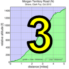

|  |  |
| pl | # | name | team | cat | time | mph | fph | %median |
|---|---|---|---|---|---|---|---|---|
| 1 | 129 | Lisa Penzel | The Brown Zone | 45+ | 28:05 | 15.60 | 1496 | 117.73 |
| 2 | 305 | Amy Cameron | Sr's & Mr's of No Mercy | 30+ | 28:16 | 15.50 | 1486 | 116.96 |
| 3 | 8 | Janet Martinez | Sr's & Mr's of No Mercy | 28:29 | 15.38 | 1475 | 116.07 | |
| 4 | 403 | Roxy Brown | The Brown Zone | 40+ | 29:20 | 14.93 | 1432 | 112.71 |
| 5 | 146 | Lynn Sestak | The Brown Zone | 50+ | 29:53 | 14.66 | 1405 | 110.64 |
| 6 | 215 | Laura Hipp | Western Wheelers | 4 | 29:59 | 14.61 | 1401 | 110.27 |
| 7 | 79 | Lisa Emmerich | Sr's & Mr's of No Mercy | 50+ | 30:33 | 14.34 | 1375 | 108.22 |
| 8 | 91 | Hannah Hausman | Hausbert | 20+ | 31:57 | 13.71 | 1315 | 103.48 |
| 9 | 422 | Sandra King | Team Fremont FFBC p/b Chipotle | 40+ | 32:01 | 13.68 | 1312 | 103.26 |
| 10 | 408 | Julie Colwell | Team Colwell | 40+ | 32:05 | 13.65 | 1309 | 103.05 |
| 11 | 404 | Sugar Brown | The Brown Zone | Brown | 32:49 | 13.35 | 1280 | 100.75 |
| 12 | 311 | Heidi Fraser | Taleo Racing | 50+ | 33:24 | 13.11 | 1257 | 98.99 |
| 13 | 440 | Darlene Stevenson | 40+ | 36:42 | 11.93 | 1144 | 90.09 | |
| 14 | 94 | Christine Holmes | Low-Key | 45+ | 37:12 | 11.77 | 1129 | 88.88 |
| 15 | 312 | Andrea Ivan | Silicon Valley Triathlon | 38:29 | 11.38 | 1091 | 85.91 | |
| 16 | 42 | Judy Colwell & Rufus | Team Colwell | 70+ | 43:56 | 9.97 | 956 | 75.25 |
| 17 | 423 | Nina Komlik | 45+ | 47:16 | 9.27 | 889 | 69.95 |
| pl | # | name | team | cat | time | mph | fph | %median |
|---|---|---|---|---|---|---|---|---|
| 1 | 120 | Rob Manchester | 35+ | 22:32 | 19.44 | 1864 | 121.63 | |
| 2 | 69 | Adrien Costa | Slipstream-Craddock Jr. Development | Junior | 22:58 | 19.07 | 1829 | 119.34 |
| 3 | 56 | Tim Clark | Low-Key | 45+ | 23:19 | 18.78 | 1801 | 117.55 |
| 3 | 212 | Clark Foy | Western Wheelers | 45+ | 23:19 | 18.78 | 1801 | 117.55 |
| 5 | 38 | Rich Brown | The Brown Zone | 35+ | 23:24 | 18.72 | 1795 | 117.13 |
| 6 | 438 | Kieran Sherlock | Western Wheelers | 45+ | 23:25 | 18.70 | 1794 | 117.05 |
| 7 | 131 | Josh Pizzica | Gene-Solve/Etxea | 35+ | 23:43 | 18.47 | 1771 | 115.57 |
| 8 | 44 | Ciaran Byrne | Sr's & Mr's of No Mercy | 40+ | 23:56 | 18.30 | 1755 | 114.52 |
| 9 | 230 | Carl Nielson | Sr's & Mr's of No Mercy | 50+ | 23:58 | 18.28 | 1752 | 114.36 |
| 10 | 125 | Alan Nevin | IronData Thirsty Bear | 40+ | 24:09 | 18.14 | 1739 | 113.49 |
| 11 | 213 | Chris Furgiuele | Dolce Vita Cycling | 35+ | 24:10 | 18.12 | 1738 | 113.41 |
| 12 | 149 | Daryl Spano | San Jose Bike Club | 45+ | 24:11 | 18.11 | 1737 | 113.34 |
| 13 | 246 | Chris Kovacs | Eden Bicycles | 35+ | 24:18 | 18.02 | 1728 | 112.79 |
| 14 | 239 | Dennis Van Hoof | Type 1 Diabetes | 35+ | 24:25 | 17.94 | 1720 | 112.25 |
| 15 | 434 | Stefano Profumo | Bike Trip/Symantec | 30+ | 24:38 | 17.78 | 1705 | 111.27 |
| 16 | 71 | Robby Cuthbert | Hausbert | 20+ | 24:41 | 17.74 | 1702 | 111.04 |
| 17 | 416 | David Gonzales | 35+ | 24:46 | 17.69 | 1696 | 110.67 | |
| 18 | 231 | Travis Retzer | Eden Bicycles | 4 | 24:53 | 17.60 | 1688 | 110.15 |
| 19 | 411 | Geoff Drake | Bike Trip/Symantec | 50+ | 25:01 | 17.51 | 1679 | 109.56 |
| 20 | 108 | Joe Karbowski | 30+ | 25:10 | 17.40 | 1669 | 108.91 | |
| 21 | 70 | Andy Crews | Diablo | 40+ | 25:13 | 17.37 | 1666 | 108.69 |
| 22 | 324 | Edvard Wendelin | 25+ | 25:19 | 17.30 | 1659 | 108.26 | |
| 23 | 421 | Mark King | IC3 Hammer Nutrition | 45+ | 25:20 | 17.29 | 1658 | 108.19 |
| 24 | 443 | H Two Brown | The Brown Zone | 50- | 25:49 | 16.97 | 1627 | 106.17 |
| 25 | 412 | Rob Easley | Sr's & Mr's of No Mercy | 45+ | 26:10 | 16.74 | 1605 | 104.75 |
| 26 | 417 | Brian Haines | Taleo Racing | 35+ | 26:14 | 16.70 | 1601 | 104.48 |
| 27 | 410 | Bryn Dole | Blekko | 40+ | 26:17 | 16.66 | 1598 | 104.28 |
| 28 | 419 | Sunil Jagadish | San Jose Bike Club | 25+ | 26:21 | 16.62 | 1594 | 104.02 |
| 29 | 80 | Joe Fant | The Brown Zone | 50+ | 26:29 | 16.54 | 1586 | 103.49 |
| 30 | 46 | Gonzalo Carrillo | Team Fremont FFBC p/b Chipotle | 45+ | 26:33 | 16.50 | 1582 | 103.23 |
| 31 | 73 | J.D. Daniels | Eden Bicycles | 35+ | 26:36 | 16.47 | 1579 | 103.04 |
| 32 | 104 | Anthony Jawad | 25+ | 26:44 | 16.38 | 1571 | 102.52 | |
| 33 | 37 | Dino Brown | The Brown Zone | Dual Suspension Beast | 26:48 | 16.34 | 1567 | 102.27 |
| 34 | 78 | Bill Dvorak | 55+ | 26:53 | 16.29 | 1562 | 101.95 | |
| 35 | 39 | Slow Brown | The Brown Zone | Two Flat Tires | 27:02 | 16.20 | 1554 | 101.39 |
| 36 | 450 | Brad Fox | LGBRC | 30+ | 27:18 | 16.04 | 1538 | 100.40 |
| 37 | 130 | Jim Perreira | 45+ | 27:23 | 16.00 | 1534 | 100.09 | |
| 38 | 76 | Pierre Doussiere | Mysef | 50+ | 27:26 | 15.97 | 1531 | 99.91 |
| 39 | 99 | Peter Ingram | Ind. | 55+ | 27:44 | 15.79 | 1514 | 98.83 |
| 39 | 400 | Ramon Alarcon | San Jose Bike Club | 40+ | 27:44 | 15.79 | 1514 | 98.83 |
| 41 | 45 | Pat Callahan | Quadzilla Racing | 40+ | 27:47 | 15.76 | 1512 | 98.65 |
| 42 | 428 | Russ McCrary | Sr's & Mr's of No Mercy | 50+ | 28:11 | 15.54 | 1490 | 97.25 |
| 43 | 240 | David Vrane | Sr's & Mr's of No Mercy | 45+ | 28:23 | 15.43 | 1480 | 96.56 |
| 44 | 68 | Alex Cortez | Team Fremont FFBC p/b Chipotle | 40+ | 28:24 | 15.42 | 1479 | 96.51 |
| 45 | 110 | Franz Kelsch | Pan y Agua | 65 Almost | 28:27 | 15.40 | 1476 | 96.34 |
| 46 | 12 | Will von Kaenel | LGBRC | 50+ | 28:36 | 15.31 | 1469 | 95.83 |
| 47 | 133 | Thomas Preisler | LGBRC | 55+ | 28:42 | 15.26 | 1463 | 95.50 |
| 48 | 317 | Thomas Rabedeau | SLACer | 55+ | 28:45 | 15.23 | 1461 | 95.33 |
| 49 | 141 | Nico Sallembien | Silicon Valley Triathlon | 35+ | 28:46 | 15.23 | 1460 | 95.28 |
| 50 | 65 | Kevin Comerford | Sr's & Mr's of No Mercy | 30+ | 28:52 | 15.17 | 1455 | 94.95 |
| 51 | 43 | Scott Byer | 45+ | 29:02 | 15.09 | 1447 | 94.40 | |
| 52 | 31 | George Bonanto | Clydesdale | 29:07 | 15.04 | 1442 | 94.13 | |
| 53 | 401 | Nick Bellomo | Type 1 Diabetes | 30+ | 29:09 | 15.03 | 1441 | 94.03 |
| 54 | 135 | Mihai R. | 30+ | 29:10 | 15.02 | 1440 | 93.97 | |
| 55 | 98 | Brandon Iles | 30+ | 29:12 | 15.00 | 1438 | 93.86 | |
| 56 | 300 | MichaelsJ. Andalora | Bike Trip/Symantec | 60+ | 29:17 | 14.96 | 1434 | 93.60 |
| 57 | 81 | Rick Ferrell | Bike Trip/Symantec | 50+ | 29:23 | 14.91 | 1429 | 93.28 |
| 57 | 234 | Tommy Aldo Sonin | 30+ | 29:23 | 14.91 | 1429 | 93.28 | |
| 59 | 437 | Eddie Santos | 25+ | 29:29 | 14.86 | 1425 | 92.96 | |
| 60 | 85 | Danny Froeming | 45+ | 29:34 | 14.81 | 1421 | 92.70 | |
| 61 | 169 | Nic Brummell | Atlas | 50+ | 29:45 | 14.72 | 1412 | 92.13 |
| 62 | 127 | Bart Niechwiej | 35+ | 29:52 | 14.67 | 1406 | 91.77 | |
| 63 | 26 | Bernard Bell | 50+ | 30:03 | 14.58 | 1398 | 91.21 | |
| 64 | 143 | Wink Saville | 60+ | 30:04 | 14.57 | 1397 | 91.16 | |
| 65 | 160 | Greg Watson | Palo Verde Velo | 45+ | 30:07 | 14.54 | 1395 | 91.01 |
| 66 | 430 | Kris McQueen | Diablo | 35+ | 30:24 | 14.41 | 1382 | 90.16 |
| 67 | 431 | Edward Miller | SLACer | 70+ | 30:27 | 14.38 | 1379 | 90.01 |
| 68 | 60 | Fernando Colmenares | Team Fremont FFBC p/b Chipotle | 65+ | 30:29 | 14.37 | 1378 | 89.91 |
| 69 | 84 | Stephen Fong | CyclePath Racing | 45+ | 30:44 | 14.25 | 1367 | 89.18 |
| 69 | 48 | Peter Cathcart | San Jose Bike Club | 50+ | 30:44 | 14.25 | 1367 | 89.18 |
| 71 | 58 | Kevin Colagiovanni | Team DUD | 25+ | 31:13 | 14.03 | 1345 | 87.80 |
| 72 | 405 | Steve Bursley | Team Wild Hare | 45+ | 31:41 | 13.82 | 1326 | 86.51 |
| 73 | 126 | Ronald Ng | 45+ | 31:49 | 13.77 | 1320 | 86.14 | |
| 74 | 426 | Thomas Maltbaek | MTBR | 20+ | 32:26 | 13.50 | 1295 | 84.51 |
| 75 | 441 | Han Wen | GOM | 40+ | 33:03 | 13.25 | 1271 | 82.93 |
| 76 | 225 | Thomas Maslen | Western Wheelers | 50+ | 33:39 | 13.02 | 1248 | 81.45 |
| 77 | 63 | Skyler Colwell | Team Colwell | Junior | 40:23 | 10.85 | 1040 | 67.87 |
| 78 | 442 | Matt Wittmann | 25+ | 46:36 | 9.40 | 901 | 58.82 | |
| 79 | 62 | Liam Colwell | Team Colwell | Junior | 58:27 | 7.49 | 719 | 46.89 |
| pl | # | name | team | cat | time | mph | fph | %median |
|---|---|---|---|---|---|---|---|---|
| 1 | 406 | Paul Chuck | Sr's & Mr's of No Mercy | 55+ | 24:36 | 17.80 | 1707 | 111.42 |
| 429 | Paul McKenzie | Sr's & Mr's of No Mercy | 55+ | |||||
| 2 | 64 | Tracy Colwell | Team Colwell | 40+ | 33:46 | 12.97 | 1244 | 89.54 |
| 61 | Hadley Colwell | Team Colwell | Junior | |||||
| 3 | 414 | David Engelbrecht | Summit Chuters | 40+ | 46:36 | 9.40 | 901 | 58.82 |
| 415 | Rachel Engelbrecht | Summit Chuters | 10/15/2012 |
| pl | # | name | team | cat | time | mph | fph | %median |
|---|---|---|---|---|---|---|---|---|
| 1 | 1 | Daniel Connelly | Low-Key | 3 | 60:05 | 7.29 | 699 | 45.62 |
| pl | # | name | team | cat | time | mph | fph | %median |
|---|---|---|---|---|---|---|---|---|
| 1 | 129 | Lisa Penzel | The Brown Zone | 45+ | 27:31 | 13.08 | 2965 | 131.24 |
| 2 | 146 | Lynn Sestak | The Brown Zone | 50+ | 28:55 | 12.45 | 2822 | 124.88 |
| 3 | 404 | Sugar Brown | The Brown Zone | Brown | 30:02 | 11.99 | 2717 | 120.24 |
| 4 | 305 | Amy Cameron | Sr's & Mr's of No Mercy | 30+ | 30:52 | 11.66 | 2644 | 116.99 |
| 5 | 8 | Janet Martinez | Sr's & Mr's of No Mercy | 31:00 | 11.61 | 2632 | 116.49 | |
| 6 | 215 | Laura Hipp | Western Wheelers | 4 | 32:54 | 10.94 | 2480 | 109.76 |
| 7 | 403 | Roxy Brown | The Brown Zone | 40+ | 33:27 | 10.76 | 2439 | 107.96 |
| 8 | 79 | Lisa Emmerich | Sr's & Mr's of No Mercy | 50+ | 34:55 | 10.31 | 2337 | 103.42 |
| 9 | 408 | Julie Colwell | Team Colwell | 40+ | 35:07 | 10.25 | 2324 | 102.83 |
| 10 | 422 | Sandra King | Team Fremont FFBC p/b Chipotle | 40+ | 36:07 | 9.97 | 2259 | 99.99 |
| 11 | 311 | Heidi Fraser | Taleo Racing | 50+ | 36:18 | 9.92 | 2248 | 99.48 |
| 12 | 91 | Hannah Hausman | Hausbert | 20+ | 39:06 | 9.21 | 2087 | 92.36 |
| 13 | 312 | Andrea Ivan | Silicon Valley Triathlon | 44:12 | 8.14 | 1846 | 81.70 | |
| 14 | 440 | Darlene Stevenson | 40+ | 44:16 | 8.13 | 1843 | 81.58 | |
| 15 | 94 | Christine Holmes | Low-Key | 45+ | 44:54 | 8.02 | 1817 | 80.43 |
| 16 | 42 | Judy Colwell & Rufus | Team Colwell | 70+ | 54:03 | 6.66 | 1510 | 66.81 |
| 17 | 423 | Nina Komlik | 45+ | 55:08 | 6.53 | 1480 | 65.50 |
| pl | # | name | team | cat | time | mph | fph | %median |
|---|---|---|---|---|---|---|---|---|
| 1 | 120 | Rob Manchester | 35+ | 23:48 | 15.13 | 3429 | 125.79 | |
| 2 | 69 | Adrien Costa | Slipstream-Craddock Jr. Development | Junior | 24:33 | 14.66 | 3324 | 121.94 |
| 3 | 230 | Carl Nielson | Sr's & Mr's of No Mercy | 50+ | 24:34 | 14.65 | 3322 | 121.86 |
| 4 | 131 | Josh Pizzica | Gene-Solve/Etxea | 35+ | 24:37 | 14.62 | 3315 | 121.61 |
| 5 | 38 | Rich Brown | The Brown Zone | 35+ | 24:50 | 14.50 | 3286 | 120.55 |
| 6 | 438 | Kieran Sherlock | Western Wheelers | 45+ | 24:59 | 14.41 | 3266 | 119.83 |
| 7 | 212 | Clark Foy | Western Wheelers | 45+ | 25:07 | 14.33 | 3249 | 119.19 |
| 8 | 56 | Tim Clark | Low-Key | 45+ | 25:11 | 14.30 | 3240 | 118.88 |
| 9 | 213 | Chris Furgiuele | Dolce Vita Cycling | 35+ | 25:39 | 14.04 | 3181 | 116.71 |
| 10 | 125 | Alan Nevin | IronData Thirsty Bear | 40+ | 25:49 | 13.94 | 3161 | 115.96 |
| 11 | 239 | Dennis Van Hoof | Type 1 Diabetes | 35+ | 25:52 | 13.92 | 3155 | 115.74 |
| 12 | 44 | Ciaran Byrne | Sr's & Mr's of No Mercy | 40+ | 26:00 | 13.85 | 3138 | 115.14 |
| 13 | 71 | Robby Cuthbert | Hausbert | 20+ | 26:02 | 13.83 | 3134 | 114.99 |
| 14 | 434 | Stefano Profumo | Bike Trip/Symantec | 30+ | 26:27 | 13.61 | 3085 | 113.18 |
| 15 | 412 | Rob Easley | Sr's & Mr's of No Mercy | 45+ | 26:40 | 13.50 | 3060 | 112.26 |
| 16 | 443 | H Two Brown | The Brown Zone | 50- | 26:50 | 13.42 | 3041 | 111.57 |
| 17 | 411 | Geoff Drake | Bike Trip/Symantec | 50+ | 27:01 | 13.33 | 3020 | 110.81 |
| 18 | 149 | Daryl Spano | San Jose Bike Club | 45+ | 27:16 | 13.20 | 2993 | 109.79 |
| 19 | 416 | David Gonzales | 35+ | 27:29 | 13.10 | 2969 | 108.93 | |
| 20 | 231 | Travis Retzer | Eden Bicycles | 4 | 27:30 | 13.09 | 2967 | 108.86 |
| 21 | 80 | Joe Fant | The Brown Zone | 50+ | 27:58 | 12.87 | 2918 | 107.05 |
| 22 | 417 | Brian Haines | Taleo Racing | 35+ | 28:06 | 12.81 | 2904 | 106.54 |
| 23 | 246 | Chris Kovacs | Eden Bicycles | 35+ | 28:07 | 12.80 | 2902 | 106.47 |
| 24 | 70 | Andy Crews | Diablo | 40+ | 28:13 | 12.76 | 2892 | 106.10 |
| 25 | 108 | Joe Karbowski | 30+ | 28:15 | 12.74 | 2888 | 105.97 | |
| 26 | 39 | Slow Brown | The Brown Zone | Two Flat Tires | 28:22 | 12.69 | 2877 | 105.54 |
| 27 | 421 | Mark King | IC3 Hammer Nutrition | 45+ | 28:25 | 12.67 | 2872 | 105.35 |
| 28 | 324 | Edvard Wendelin | 25+ | 28:49 | 12.49 | 2832 | 103.89 | |
| 29 | 46 | Gonzalo Carrillo | Team Fremont FFBC p/b Chipotle | 45+ | 28:51 | 12.48 | 2828 | 103.77 |
| 30 | 419 | Sunil Jagadish | San Jose Bike Club | 25+ | 29:05 | 12.38 | 2806 | 102.94 |
| 31 | 410 | Bryn Dole | Blekko | 40+ | 29:24 | 12.24 | 2776 | 101.83 |
| 32 | 78 | Bill Dvorak | 55+ | 29:27 | 12.22 | 2771 | 101.65 | |
| 33 | 37 | Dino Brown | The Brown Zone | Dual Suspension Beast | 29:31 | 12.20 | 2765 | 101.42 |
| 34 | 130 | Jim Perreira | 45+ | 29:35 | 12.17 | 2758 | 101.20 | |
| 35 | 73 | J.D. Daniels | Eden Bicycles | 35+ | 29:40 | 12.13 | 2751 | 100.91 |
| 36 | 317 | Thomas Rabedeau | SLACer | 55+ | 29:45 | 12.10 | 2743 | 100.63 |
| 37 | 240 | David Vrane | Sr's & Mr's of No Mercy | 45+ | 29:47 | 12.09 | 2740 | 100.52 |
| 38 | 104 | Anthony Jawad | 25+ | 29:53 | 12.05 | 2731 | 100.18 | |
| 39 | 450 | Brad Fox | LGBRC | 30+ | 29:56 | 12.03 | 2726 | 100.01 |
| 40 | 81 | Rick Ferrell | Bike Trip/Symantec | 50+ | 30:13 | 11.91 | 2700 | 99.07 |
| 41 | 99 | Peter Ingram | Ind. | 55+ | 30:21 | 11.86 | 2689 | 98.64 |
| 42 | 135 | Mihai R. | 30+ | 30:49 | 11.68 | 2648 | 97.15 | |
| 43 | 400 | Ramon Alarcon | San Jose Bike Club | 40+ | 31:12 | 11.54 | 2615 | 95.95 |
| 44 | 110 | Franz Kelsch | Pan y Agua | 65 Almost | 31:14 | 11.53 | 2613 | 95.85 |
| 45 | 43 | Scott Byer | 45+ | 32:04 | 11.23 | 2545 | 93.36 | |
| 46 | 65 | Kevin Comerford | Sr's & Mr's of No Mercy | 30+ | 32:05 | 11.22 | 2543 | 93.31 |
| 47 | 401 | Nick Bellomo | Type 1 Diabetes | 30+ | 32:11 | 11.19 | 2535 | 93.02 |
| 48 | 76 | Pierre Doussiere | Mysef | 50+ | 32:12 | 11.18 | 2534 | 92.97 |
| 49 | 12 | Will von Kaenel | LGBRC | 50+ | 32:21 | 11.13 | 2522 | 92.54 |
| 50 | 300 | MichaelsJ. Andalora | Bike Trip/Symantec | 60+ | 32:29 | 11.08 | 2512 | 92.16 |
| 51 | 160 | Greg Watson | Palo Verde Velo | 45+ | 32:33 | 11.06 | 2507 | 91.97 |
| 52 | 45 | Pat Callahan | Quadzilla Racing | 40+ | 32:38 | 11.03 | 2501 | 91.74 |
| 53 | 234 | Tommy Aldo Sonin | 30+ | 32:39 | 11.03 | 2499 | 91.69 | |
| 54 | 133 | Thomas Preisler | LGBRC | 55+ | 32:42 | 11.01 | 2495 | 91.55 |
| 55 | 98 | Brandon Iles | 30+ | 33:09 | 10.86 | 2462 | 90.31 | |
| 56 | 169 | Nic Brummell | Atlas | 50+ | 33:26 | 10.77 | 2441 | 89.54 |
| 57 | 442 | Matt Wittmann | 25+ | 33:32 | 10.74 | 2433 | 89.28 | |
| 58 | 127 | Bart Niechwiej | 35+ | 33:53 | 10.62 | 2408 | 88.35 | |
| 59 | 143 | Wink Saville | 60+ | 34:05 | 10.56 | 2394 | 87.83 | |
| 60 | 431 | Edward Miller | SLACer | 70+ | 34:11 | 10.53 | 2387 | 87.58 |
| 61 | 405 | Steve Bursley | Team Wild Hare | 45+ | 34:29 | 10.44 | 2366 | 86.82 |
| 62 | 84 | Stephen Fong | CyclePath Racing | 45+ | 34:33 | 10.42 | 2362 | 86.65 |
| 63 | 26 | Bernard Bell | 50+ | 34:38 | 10.39 | 2356 | 86.44 | |
| 64 | 31 | George Bonanto | Clydesdale | 34:53 | 10.32 | 2339 | 85.82 | |
| 65 | 437 | Eddie Santos | 25+ | 34:57 | 10.30 | 2335 | 85.66 | |
| 66 | 48 | Peter Cathcart | San Jose Bike Club | 50+ | 35:02 | 10.28 | 2329 | 85.45 |
| 67 | 58 | Kevin Colagiovanni | Team DUD | 25+ | 35:05 | 10.26 | 2326 | 85.33 |
| 68 | 426 | Thomas Maltbaek | MTBR | 20+ | 35:47 | 10.06 | 2280 | 83.66 |
| 69 | 85 | Danny Froeming | 45+ | 37:14 | 9.67 | 2192 | 80.40 | |
| 70 | 60 | Fernando Colmenares | Team Fremont FFBC p/b Chipotle | 65+ | 37:32 | 9.59 | 2174 | 79.76 |
| 71 | 428 | Russ McCrary | Sr's & Mr's of No Mercy | 50+ | 37:46 | 9.53 | 2161 | 79.27 |
| 72 | 441 | Han Wen | GOM | 40+ | 38:10 | 9.43 | 2138 | 78.44 |
| 73 | 126 | Ronald Ng | 45+ | 38:39 | 9.31 | 2111 | 77.46 | |
| 74 | 141 | Nico Sallembien | Silicon Valley Triathlon | 35+ | 38:42 | 9.30 | 2109 | 77.36 |
| 75 | 68 | Alex Cortez | Team Fremont FFBC p/b Chipotle | 40+ | 39:17 | 9.16 | 2077 | 76.21 |
| 76 | 430 | Kris McQueen | Diablo | 35+ | 39:28 | 9.12 | 2068 | 75.85 |
| 77 | 225 | Thomas Maslen | Western Wheelers | 50+ | 39:30 | 9.11 | 2066 | 75.79 |
| 78 | 63 | Skyler Colwell | Team Colwell | Junior | 53:12 | 6.77 | 1534 | 56.27 |
| 79 | 62 | Liam Colwell | Team Colwell | Junior | 71:06 | 5.06 | 1148 | 42.11 |
| pl | # | name | team | cat | time | mph | fph | %median |
|---|---|---|---|---|---|---|---|---|
| 1 | 406 | Paul Chuck | Sr's & Mr's of No Mercy | 55+ | 28:11 | 12.77 | 2895 | 106.22 |
| 429 | Paul McKenzie | Sr's & Mr's of No Mercy | 55+ | |||||
| 2 | 64 | Tracy Colwell | Team Colwell | 40+ | 39:50 | 9.04 | 2049 | 82.91 |
| 61 | Hadley Colwell | Team Colwell | Junior | |||||
| 3 | 414 | David Engelbrecht | Summit Chuters | 40+ | 59:15 | 6.08 | 1377 | 50.53 |
| 415 | Rachel Engelbrecht | Summit Chuters | 10/15/2012 |
| pl | # | name | team | cat | time | mph | fph | %median |
|---|---|---|---|---|---|---|---|---|
| 1 | 1 | Daniel Connelly | Low-Key | 3 | 52:47 | 6.82 | 1546 | 56.72 |